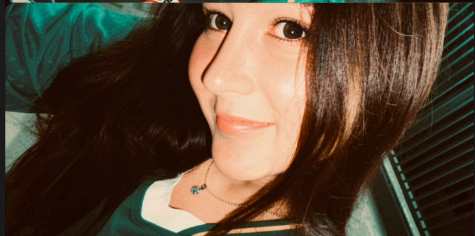

Halo, Orang Baik.
Ada sedikit apresiasi buat kamu yang selalu berusaha keras tiap harinya. Coba scroll pelan-pelan ke bawah ya... ✨

Ada sedikit apresiasi buat kamu yang selalu berusaha keras tiap harinya. Coba scroll pelan-pelan ke bawah ya... ✨
Mungkin kamu kadang ngerasa capek dan kurang percaya diri, tapi percaya deh, di mata orang lain kamu itu luar biasa. Cantiknya kamu bukan cuma dari penampilan, tapi dari senyum tulus yang selalu kamu kasih ke sekeliling.
Kalau hari ini kerasa berat, gapapa buat istirahat bentar. Jangan terlalu keras sama diri sendiri, ya. Dunia ini selalu butuh orang-orang dengan energi positif kayak kamu. Semangat terus!


Hari ini DILARANG KERAS OVERTHINKING! Kalau pikiranmu tiba-tiba ruwet mikirin hal yang belum tentu terjadi, awas aja ya! Dunia nggak akan runtuh kok kalau kamu istirahat sebentar.
Kalau tiba-tiba ngerasa capek banget, sedih, atau butuh sandaran, coba klik tombol ajaib ini!

Gapapa capek, wajar kok. Kamu udah ngelakuin yang terbaik hari ini. Sini peluk jauh dulu! Tarik napas yang dalem, senyum dikit, besok kita coba lagi ya! 🫂✨
Bantu aku ceklis semua tugas di bawah ini ya!
✨ Klik amplopnya pelan-pelan ✨
Terima kasih udah bertahan dan jadi manusia yang hebat. Apapun yang lagi kamu perjuangin sekarang, aku yakin kamu pasti bisa melewatinya. Jangan lupa bahagia hari ini! 🌻